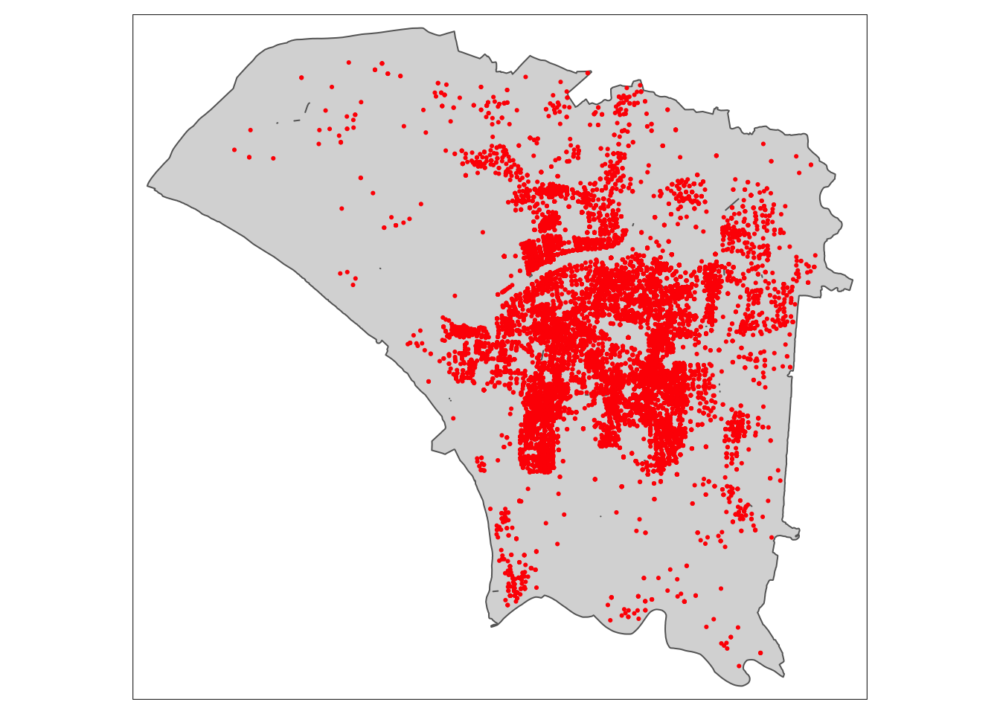
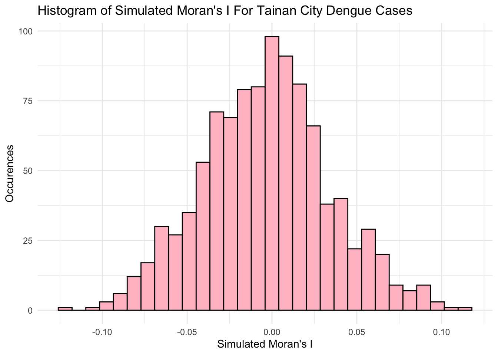
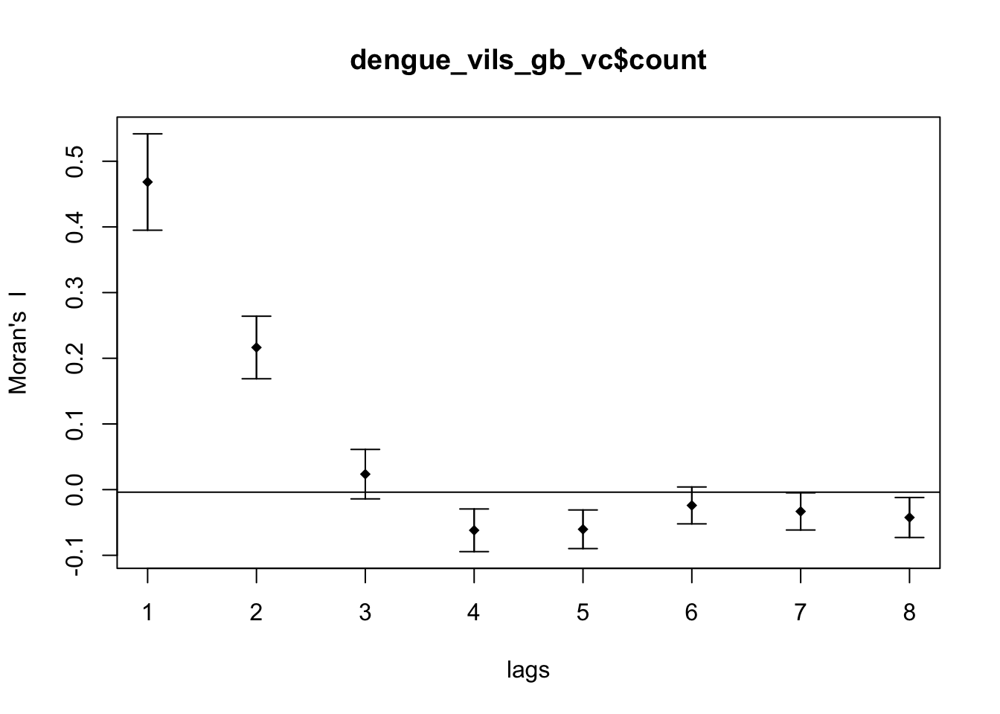
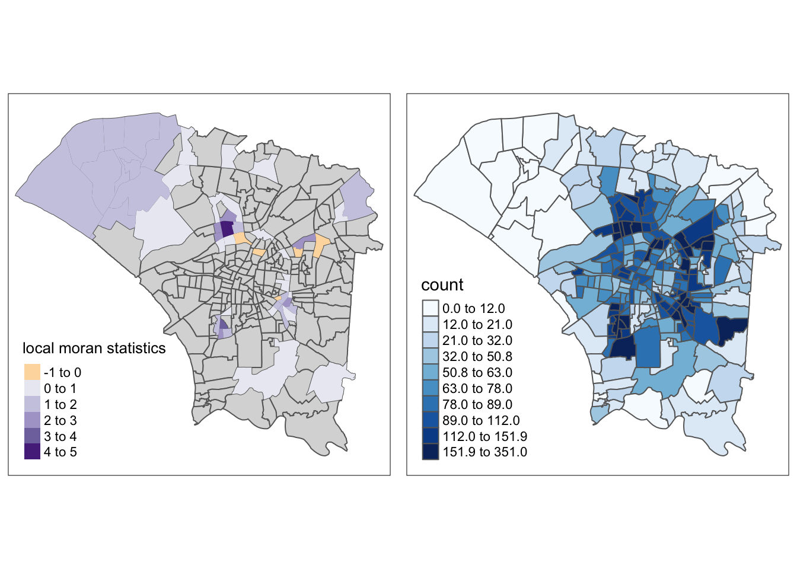
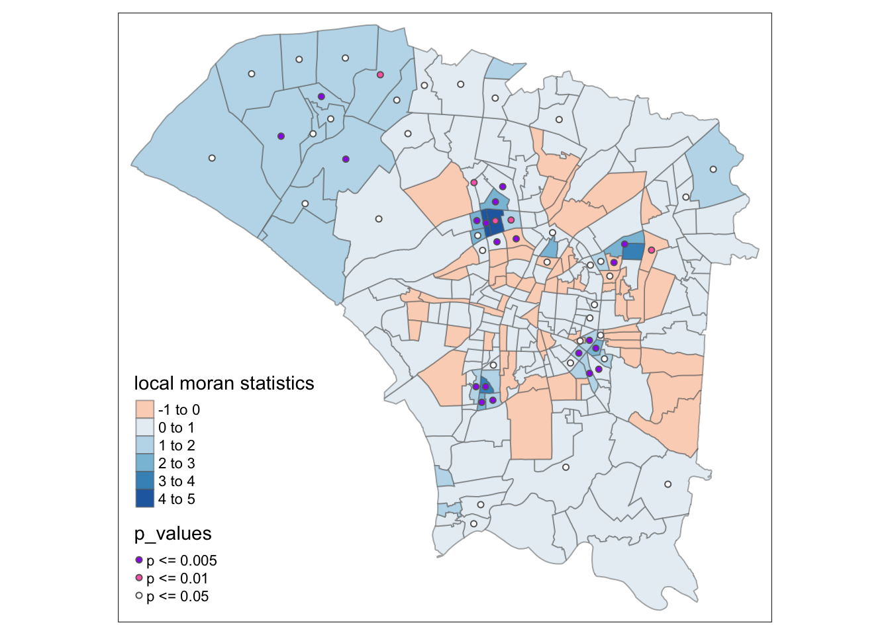
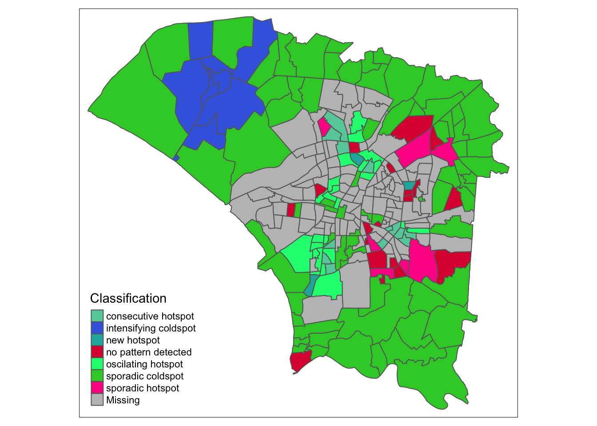
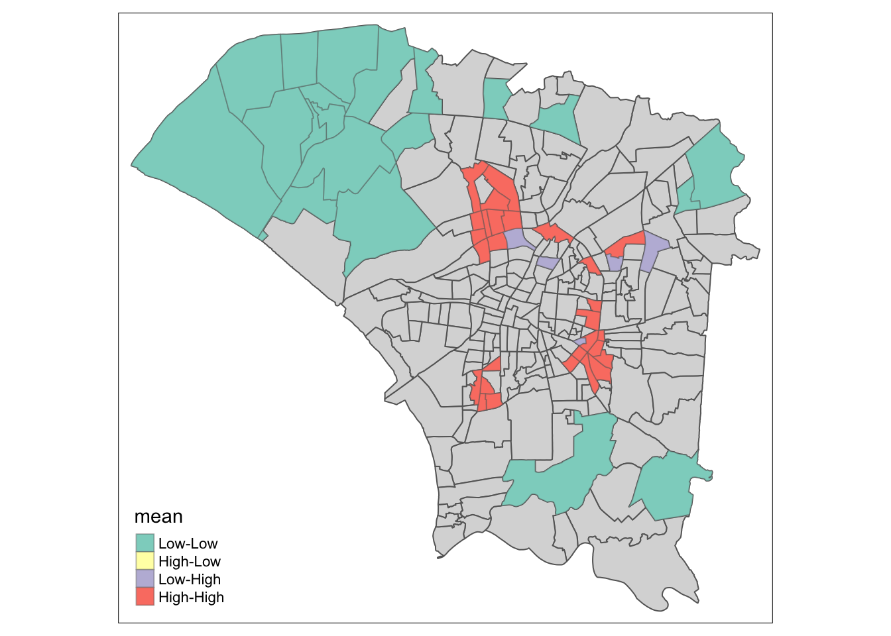
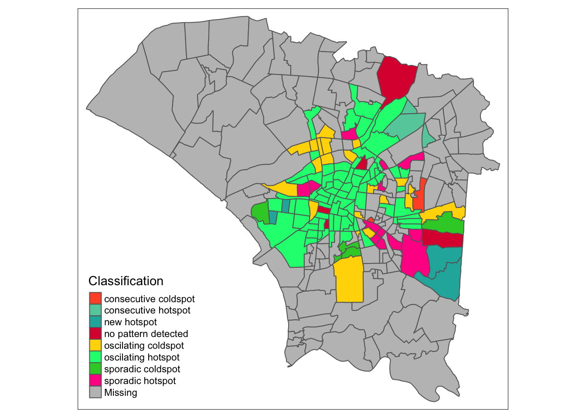
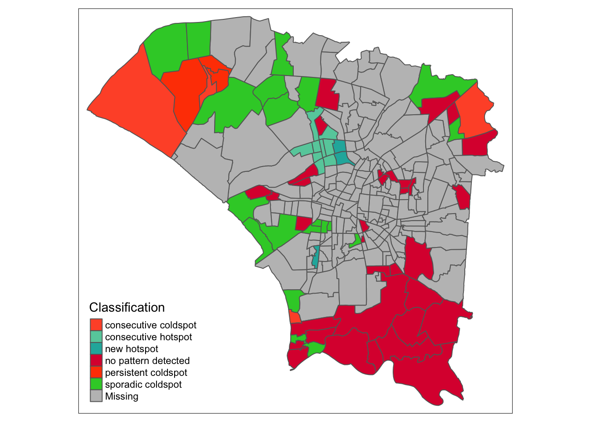

pacman::p_load(sf, tmap, tidyverse, ggplot2, smoothr, lubridate, sfdep)Take-Home Exercise 1
Take-Home Exercise
Take-Home Exercise 2
1.0 Overview
2.0 Wrangling
Loading the required packages
sf Needed to handle spatial data through the new simple features standard
tmap Create thematic maps, particularly chloropleth maps in our case
tidyverse For easy data manipulation and some visualisation
ggplot2 A step above the usual visualisations, like histograms
smoothr I use it to remove hole in geometry
lubridate Makes handling dates easy, great for dealing with epidemiology weeks
sfdep Spatial dependence with spatial features, the highlight of this take home exercise. The spacetime object is particularly useful
Loading the TAINAN_VILLAGE dataset
twv <- st_read(dsn = "data/geospatial",
layer = "TAINAN_VILLAGE")Reading layer `TAINAN_VILLAGE' from data source
`/Users/matthewho/Work/Y3S2/IS415/Website/IS415/TakeHomeEx/TakeHomeEx2/data/geospatial'
using driver `ESRI Shapefile'
Simple feature collection with 649 features and 10 fields
Geometry type: POLYGON
Dimension: XY
Bounding box: xmin: 120.0269 ymin: 22.88751 xmax: 120.6563 ymax: 23.41374
Geodetic CRS: TWD97Loading the Dengue Daily apspatial dataset
dengued <- read_csv("data/aspatial/Dengue_Daily.csv")Unfortunately, I cannot read and understand Chinese characters. Leaving Chinese characters and words in my data would make work very difficult and error prone, so my first priority is to extract the right columns and translate them.
I extract the needed rows and rename them.
dengued <- dengued[, c(1, 10, 11)]
names(dengued)[1] "發病日" "最小統計區中心點X" "最小統計區中心點Y"names(dengued) <- c("Onset", "X", "Y")
names(dengued)[1] "Onset" "X" "Y" head(dengued)# A tibble: 6 × 3
Onset X Y
<date> <chr> <chr>
1 1998-01-02 120.505898941 22.464206650
2 1998-01-03 120.453657460 22.466338948
3 1998-01-13 121.751433765 24.749214667
4 1998-01-15 120.338158907 22.630316700
5 1998-01-20 121.798235373 24.684507639
6 1998-01-22 None None Before extracting those columns, I also wanted to see the types of additional information useful to our analysis. Some notable considerations are as follows.
Serotype
- Arguably the most interesting, unfortunately, there were too many missing values
Gender
Age group
Number of cases
I had some issues loading coordinates in this dataset, but setting this solved the issue for me.
options(digits = 12)dengued[, c(2, 3)] <- lapply(dengued[, c(2, 3)], as.numeric)
head(dengued)# A tibble: 6 × 3
Onset X Y
<date> <dbl> <dbl>
1 1998-01-02 121. 22.5
2 1998-01-03 120. 22.5
3 1998-01-13 122. 24.7
4 1998-01-15 120. 22.6
5 1998-01-20 122. 24.7
6 1998-01-22 NA NA As expected, there are NA values in the dataset. I remove them here and check that they are gone.
sum(apply(dengued, 1, function(x) any(is.na(x))))[1] 780dengued <- na.omit(dengued)sum(apply(dengued, 1, function(x) any(is.na(x))))[1] 0I check the CRS for the TAINAN VILLAGE dataset so I know which CRS to use when converting the Dengue dataset’s latlongs.
st_crs(twv)Coordinate Reference System:
User input: TWD97
wkt:
GEOGCRS["TWD97",
DATUM["Taiwan Datum 1997",
ELLIPSOID["GRS 1980",6378137,298.257222101,
LENGTHUNIT["metre",1]]],
PRIMEM["Greenwich",0,
ANGLEUNIT["degree",0.0174532925199433]],
CS[ellipsoidal,2],
AXIS["geodetic latitude (Lat)",north,
ORDER[1],
ANGLEUNIT["degree",0.0174532925199433]],
AXIS["geodetic longitude (Lon)",east,
ORDER[2],
ANGLEUNIT["degree",0.0174532925199433]],
USAGE[
SCOPE["Horizontal component of 3D system."],
AREA["Taiwan, Republic of China - onshore and offshore - Taiwan Island, Penghu (Pescadores) Islands."],
BBOX[17.36,114.32,26.96,123.61]],
ID["EPSG",3824]]It’s 3824, so I convert the dengue dataset’s latlongs to match.
dengued_sf <- st_as_sf(dengued, coords = c("X", "Y"),
crs = 3824)
st_crs(dengued_sf)Coordinate Reference System:
User input: EPSG:3824
wkt:
GEOGCRS["TWD97",
DATUM["Taiwan Datum 1997",
ELLIPSOID["GRS 1980",6378137,298.257222101,
LENGTHUNIT["metre",1]]],
PRIMEM["Greenwich",0,
ANGLEUNIT["degree",0.0174532925199433]],
CS[ellipsoidal,2],
AXIS["geodetic latitude (Lat)",north,
ORDER[1],
ANGLEUNIT["degree",0.0174532925199433]],
AXIS["geodetic longitude (Lon)",east,
ORDER[2],
ANGLEUNIT["degree",0.0174532925199433]],
USAGE[
SCOPE["Horizontal component of 3D system."],
AREA["Taiwan, Republic of China - onshore and offshore - Taiwan Island, Penghu (Pescadores) Islands."],
BBOX[17.36,114.32,26.96,123.61]],
ID["EPSG",3824]]Looks good to proceed. I now narrow down the study area to the given counties.
twvsz <- twv[twv$TOWNID %in% c("D01", "D02", "D04", "D06", "D07", "D08", "D32", "D39"), ] %>%
subset(select = -NOTE)Visualising the study area
plot(twvsz)
I want to ensure that all of the points from the dengue dataset fall within a polygon and not within a small gap. I use st_union to check for any holes.
u_twvsz <- st_union(twvsz)
plot(u_twvsz)Unfortunately, there were quite a few small slithers and holes. However, they seemed quite small.
unh_twvsz <- fill_holes(u_twvsz, units::set_units(1, "km^2"))
diff_twvsz <- st_difference(unh_twvsz, u_twvsz)
plot(diff_twvsz)To ensure that we were not losing any data or jeopardising the accuracy of our analysis by expanding polygons to fill the holes, I wanted to check how many points fell within the holes.
Fortunately, we did not have any, meaning I did not have to modify the geometry.
hole_victims <- st_intersection(dengued_sf, diff_twvsz)
head(hole_victims)Simple feature collection with 0 features and 1 field
Bounding box: xmin: NA ymin: NA xmax: NA ymax: NA
Geodetic CRS: TWD97
# A tibble: 0 × 2
# ℹ 2 variables: Onset <date>, geometry <GEOMETRY [°]>I restrict the data range to epidemiology weeks 31-50 2023.
Epi weeks 31-50 2023: 30-07-23 to 16-12-23
dengued_sf_epiweeks <- dengued_sf %>% filter(Onset >= as.Date("2023-07-30") & Onset <= as.Date("2023-12-16"))I now use st_intersection to restrict the points to those that fall within our study area. To reduce processing time, I did this after narrowing down our date range.
dengue_sf <- st_intersection(dengued_sf_epiweeks, u_twvsz)I then add the epi_week column according to the onset date.
dengue_sf$epi_week <- epiweek(dengue_sf$Onset)Even though the processing was quite performant, I save the preprocessed data into a .rds file.
write_rds(dengue_sf, "data/rds/dengue_sf.rds")tm_shape(u_twvsz) +
tm_polygons() +
tm_shape(dengue_sf) +
tm_dots(col = "red")
geo_dupes <- any(duplicated(dengue_sf$geometry))
geo_dupes[1] TRUEvil_dupes <- any(duplicated(twvsz$VILLCODE))
vil_dupes[1] FALSEKeep the NA for geometry purposes
dengue_vils_sf <- st_join(twvsz, dengue_sf)dengue_vils_sf[!rownames(dengue_vils_sf) %in% rownames(na.omit(dengue_vils_sf)), ]Simple feature collection with 1 feature and 11 fields
Geometry type: POLYGON
Dimension: XY
Bounding box: xmin: 120.108900267 ymin: 23.018603813 xmax: 120.137943444 ymax: 23.043198458
Geodetic CRS: TWD97
VILLCODE COUNTYNAME TOWNNAME VILLNAME VILLENG COUNTYID COUNTYCODE
444 67000350035 臺南市 安南區 鹿耳里 Lu'er Vil. D 67000
TOWNID TOWNCODE Onset epi_week geometry
444 D06 67000350 <NA> NA POLYGON ((120.13322373 23.0...dengue_vils_sf <- dengue_vils_sf[!is.na(dengue_vils_sf$VILLCODE), ]Account for the NA village
dengue_vils_gb_vc <- dengue_vils_sf %>%
group_by(VILLCODE, VILLENG) %>%
summarise(count = sum(!is.na(epi_week)))dengue_vils_gb_vc_epi <- dengue_vils_sf %>%
group_by(VILLCODE, epi_week) %>%
summarise(count = sum(!is.na(epi_week)))plot(dengue_vils_gb_vc_epi)dengue_vils_gb_vc_epi$epi_week <- ifelse(is.na(dengue_vils_gb_vc_epi$epi_week), 31, dengue_vils_gb_vc_epi$epi_week)
template <- expand.grid(VILLCODE = unique(dengue_vils_gb_vc_epi$VILLCODE),
epi_week = unique(dengue_vils_gb_vc_epi$epi_week))
merged_df <- merge(template, dengue_vils_gb_vc_epi, by = c("VILLCODE", "epi_week"), all.x = TRUE)
merged_df$count[is.na(merged_df$count)] <- 0
merged_df <- select(merged_df, -geometry)
merged_df <- st_as_sf(distinct(merge(merged_df, dengue_vils_gb_vc_epi[, c("VILLCODE", "geometry")],
by = "VILLCODE", suffixes = c("", ".y"), all.x = TRUE)))print(nrow(merged_df))[1] 5160print(length(unique(merged_df$VILLCODE)))[1] 258print(length(unique(merged_df$epi_week)))[1] 20spt <- as_spacetime(merged_df, "VILLCODE", "epi_week")
is_spacetime_cube(spt)[1] TRUEwrite_rds(spt, "data/rds/spt.rds")If data is full of landmines, the NA value remaining partially throughout the process was a dirty needle. It doesn’t hurt much now, but it might mess me up in the long run.
3.0 EDA
set.seed(42)
# tmap_options(check.and.fix = TRUE)3.1 Global Spatial Autocorrelation
See 36 <=
# plot(dengue_vils_gb_ew)Inspired by
https://jenpoer-is415-gaa-exercises.netlify.app/take-home-exercises/exe-02/the2#exploratory-data-analysis-eda-with-choropleth-maps
choropleth_map_small_multiples <- function(df, varname, facet, colors) {
tm_shape(df) +
tm_polygons(col='white') +
tm_shape(df) +
tm_polygons(varname,
palette = colors,
style="quantile") +
tm_facets(by=facet, free.coords = FALSE)
}choropleth_map_small_multiples(dengue_vils_gb_vc_epi, "count", "epi_week", "Blues")
wm_q.nb <- st_contiguity(dengue_vils_gb_vc$geometry)
wm_q.wt <- st_weights(wm_q.nb, style = "W")
wm_q.count <- dengue_vils_gb_vc$countglobal_moran_test(wm_q.count,
wm_q.nb,
wm_q.wt,
zero.policy = TRUE,
na.action=na.omit)
Moran I test under randomisation
data: x
weights: listw
Moran I statistic standard deviate = 12.86887811, p-value <
2.220446e-16
alternative hypothesis: greater
sample estimates:
Moran I statistic Expectation Variance
0.46837064728942 -0.00389105058366 0.00134674097418 moran_mc_res = global_moran_perm(wm_q.count,
wm_q.nb,
wm_q.wt,
nsim=999,
zero.policy = TRUE,
na.action=na.omit)
moran_mc_res
Monte-Carlo simulation of Moran I
data: x
weights: listw
number of simulations + 1: 1000
statistic = 0.4683706473, observed rank = 1000, p-value < 2.220446e-16
alternative hypothesis: two.sidedsummary(moran_mc_res$res[1:999]) Min. 1st Qu. Median Mean 3rd Qu.
-0.12593421750 -0.02920753745 -0.00280234298 -0.00340573808 0.01981358192
Max.
0.10977414084 var(moran_mc_res$res[1:999])[1] 0.00140296676313ggplot() +
aes(moran_mc_res$res[1:999]) +
geom_histogram(colour="black", fill="pink") +
labs(title = "Histogram of Simulated Moran's I For Tainan City Dengue Cases",
x = "Simulated Moran's I",
y = "Occurences") +
theme_minimal()
# MI_corr <- sp.correlogram(dv_total_wm_q,
# dengue_vils_gb_vc$count,
# order=8,
# method="I",
# style="W")
# plot(MI_corr)
# print(MI_corr)Local
wm_q.lisa <- local_moran(wm_q.count, wm_q.nb, wm_q.wt)
dengue_vils_gb_vc <- cbind(dengue_vils_gb_vc, wm_q.lisa)p_val_2_cats <- function(x) {
if (x < 0.005) {
return("p < 0.005")
} else if (x < 0.01) {
return("p < 0.01")
} else if (x < 0.05) {
return("p < 0.05")
} else {
return("p > 0.05")
}
}
dengue_vils_gb_vc <- dengue_vils_gb_vc %>%
mutate(p_values = sapply(p_ii, p_val_2_cats))tm_shape(dengue_vils_gb_vc) +
tm_fill(col = "ii",
style = "pretty",
palette = "RdBu",
title = "local moran statistics") +
tm_borders(alpha = 0.5) +
tm_shape(dengue_vils_gb_vc[dengue_vils_gb_vc$p_values != "p > 0.05", ]) +
tm_symbols(col = "p_values",
title.shape = "P Values:",
shapes.labels = c("p < 0.05", "p < 0.01", "p < 0.005"),
size = 0.1,
palette=c('purple', 'hotpink', 'white'))
lisa_sig <- dengue_vils_gb_vc %>%
filter(p_ii < 0.05)
tmap_mode("plot")
tm_shape(dengue_vils_gb_vc) +
tm_polygons() +
tm_borders(alpha = 0.5) +
tm_shape(lisa_sig) +
tm_fill("mean") +
tm_borders(alpha = 0.4)
Hot and Cold
ggplot(spt, aes(x = epi_week, y = count)) +
geom_histogram(binwidth = 1, fill = "skyblue", stat = "identity") +
labs(x = "Epi Week", y = "Count") +
ggtitle("Histogram of Epi Week")
# Function to create color mapping
create_color_mapping <- function(all_breaks, all_colors, map_breaks) {
color_mapping <- rep(NA, length(map_breaks))
for (i in seq_along(map_breaks)) {
match_index <- match(map_breaks[i], all_breaks)
if (!is.na(match_index)) {
color_mapping[i] <- all_colors[match_index]
}
}
return(color_mapping)
}
# Example data
all_breaks <- c("consecutive coldspot", "consecutive hotspot", "new coldspot", "new hotspot", "no pattern detected", "intensifying coldspot", "intensifying hotspot", "oscilating coldspot", "oscilating hotspot", "persistent coldspot", "persistent hotspot", "sporadic coldspot", "sporadic hotspot"
)
all_colors <- c("#FF5733", "#66CDAA", "#BA55D3", "#20B2AA", "#DC143C", "#4169E1", "#8A2BE2", "#FFD700", "#00FF7F", "#FF4500", "#9932CC", "#32CD32", "#FF1493"
)ehsa_4_spt <- function(sptcube, week_lim, geom) {
spt_n <- filter(spt, epi_week <= week_lim)
spt_nb <- spt_n %>%
activate("geometry") %>%
mutate(nb = include_self(st_contiguity(geometry)),
wt = st_inverse_distance(nb, geometry,
scale = 1,
alpha = 1),
.before = 1) %>%
set_wts("wt") %>%
set_nbs("nb")
EHSA <- emerging_hotspot_analysis(
x = spt_n,
.var = "count",
k = 1,
nsim = 99
)
gghist <- ggplot(data = EHSA,
aes(x = classification)) +
geom_bar(fill="light blue") +
coord_flip()
twv_EHSA <- twvsz %>%
left_join(EHSA,
by = c("VILLCODE" = "location")) %>%
mutate(`p_value` = replace(`p_value`, `p_value` > 0.05, NA),
`classification` = ifelse(is.na(`p_value`), NA, `classification`))
plot(gghist)
color_mapping <- create_color_mapping(all_breaks, all_colors, sort(unique(twv_EHSA$classification)))
tm_shape(twv_EHSA) +
tm_fill(col = "classification", title = "Classification", palette = color_mapping) +
tm_borders()
}ehsa_4_spt(spt, 35, twvsz)

ehsa_4_spt(spt, 40, twvsz)
ehsa_4_spt(spt, 45, twvsz)

ehsa_4_spt(spt, 50, twvsz)
